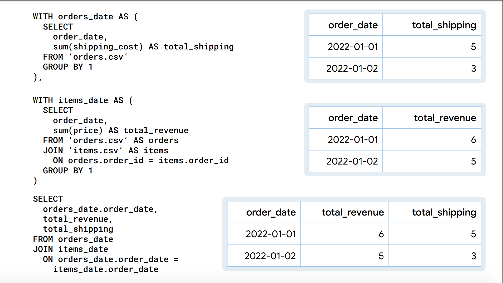
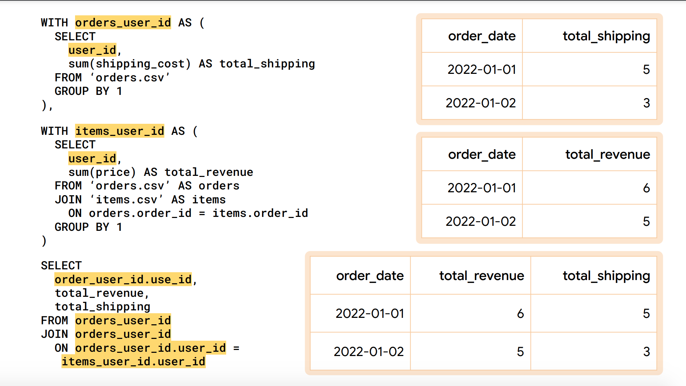
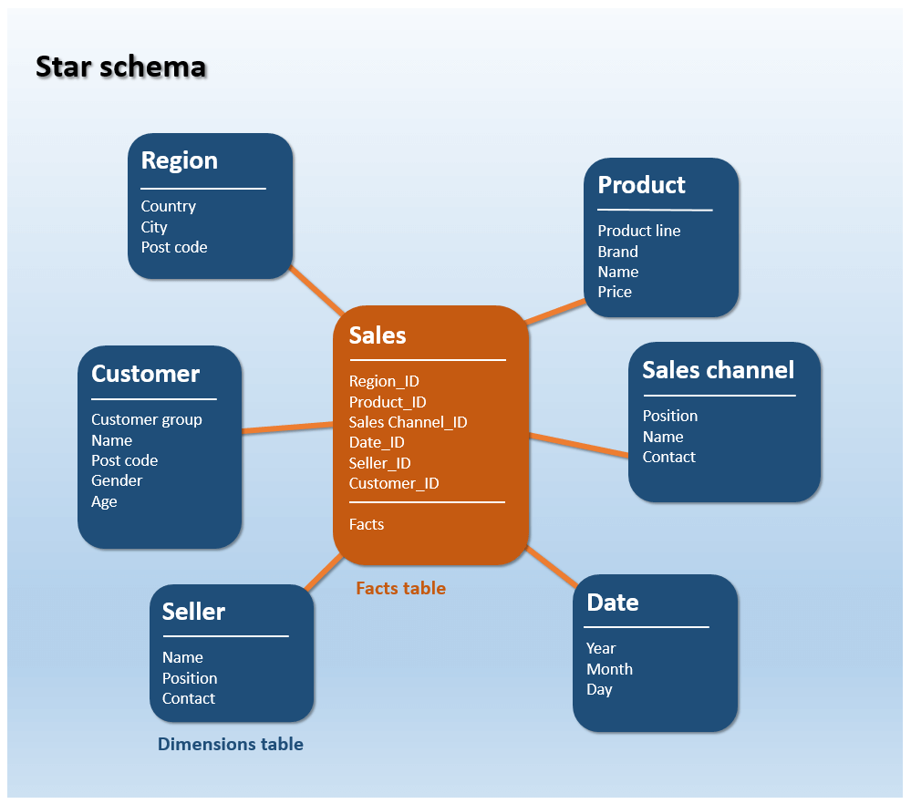

If you’re someone who doesn’t often write SQL, parts of this discussion may seem complex. However, if you’re involved in data management, building interfaces, or working with databases, this blog post will prove insightful.
The Shift in Data Management
Data is a crucial part of all organizations, and it’s only when data is understood and utilised correctly, the businesses can truly thrive. Running a successful business today depends on the data and insights derived from it that make you smarter. A common misconception that surrounds data is that data is rectangular. That is, in fact, not true. Humans tend to visualize data as rectangles than leads to this misconception. Most operations that we perform on data such as filtering, aggregating, projecting, and windowing are all based on rectangular models. Even the join operation takes in two rectangles and gives a rectangle as the joined output.
In a common ecommerce analysis you can expect two tables:
Orders
| order_id | order_date | shipping_cost | user_id |
|---|---|---|---|
| 1 | 2022-01-01 | 2 | 1 |
| 2 | 2022-01-01 | 3 | 2 |
| 3 | 2022-01-02 | 1 | 1 |
| 4 | 2022-01-02 | 23 | 3 |
Order Items
| item_id | order_id | item | price |
|---|---|---|---|
| 1 | 1 | Chocolate | 2 |
| 2 | 1 | Twizzler | 1 |
| 3 | 2 | Chocolate | 2 |
| 4 | 2 | M and M | 1 |
| 5 | 3 | Twizzler | 1 |
| 6 | 4 | Fudge | 3 |
| 7 | 4 | Skittles | 1 |
Using the above tables let’s calculate:
- total_shipping
- total_revenue
total_shipping
SELECT
sum(shipping_cost) AS total_shipping
FROM orders| total_shipping |
|---|
| 8 |
total_revenue
SELECT
sum(price) AS total_revenue
FROM items| total_revenue |
|---|
| 11 |
Looking at the same calculation across the date dimension, we get:
total_shipping by date
SELECT
order_date,
sum(shipping_cost) AS total_shipping
FROM ‘orders.csv’
GROUP BY 1
ORDER BY 1| order_date | total_shipping |
|---|---|
| 2022-01-01 | 5 |
| 2022-01-02 | 3 |
total_revenue by date
SELECT
order_date,
sum(price) AS total_revenue
FROM ‘orders.csv’ AS orders
JOIN ‘items.cvs’ AS items on
orders.order_id = items.order_id
GROUP BY 1
ORDER BY 1| order_date | total_revenue |
|---|---|
| 2022-01-01 | 6 |
| 2022-01-02 | 5 |
How does revenue relate to shipping?
This is what we expect:
| order_date | total_revenue | total_shipping |
|---|---|---|
| 2022-01-01 | 6 | 5 |
| 2022-01-02 | 5 | 3 |
This is what we get by joining:
SELECT
orders.order_date,
sum(items.price) AS total_revenue,
sum(orders.shipping_cost) AS total_shipping
FROM ‘orders.csv’ AS orders
JOIN ‘items.cvs’ AS items ON orders.order_id = items.order_id
GROUP BY 1
ORDER BY 1| order_date | total_revenue | total_shipping |
|---|---|---|
| 2022-01-01 | 6 | 10 |
| 2022-01-02 | 5 | 5 |
The incorrect results happen because the order rows in the join are duplicated resulting in an overstated computation.
SELECT *
FROM ‘orders.csv’ orders
LEFT JOIN ‘items.csv’ AS items ON orders.order_id = items.order_id| order_id | order_date | shipping_cost | user_id | item_id | order_id | item | price |
|---|---|---|---|---|---|---|---|
| 1 | 2022-01-01 | 2 | 1 | 2 | 1 | Twizzler | 1 |
| 2 | 2022-01-01 | 3 | 2 | 4 | 2 | M and M | 1 |
| 3 | 2022-01-02 | 1 | 1 | 5 | 3 | Twizzler | 1 |
| 4 | 2022-01-02 | 2 | 3 | 7 | 4 | Skittles | 1 |
| 1 | 2022-01-02 | 2 | 1 | 1 | 1 | Chocolate | 2 |
| 2 | 2022-01-02 | 3 | 2 | 3 | 2 | Chocolate | 2 |
| 4 | 2022-01-02 | 2 | 3 | 6 | 4 | Fudge | 3 |
The Limitations of Traditional Data Warehousing and SQL
SQL Templates
When using SQL, you will find yourself copying and pasting a lot, building queries with many templates. The issue lies in the fact that we operate in the rectangular context while the graph is network-based.
From the date dimension the total_shipping and total_revenue look like this:

Now, suppose there is another dimension user that looks like:
| user_id | total_revenue | total_shipping |
|---|---|---|
| 1 | 4 | 3 |
| 2 | 3 | 3 |
| 3 | 4 | 2 |
From the user dimension the total_shipping and total_revenue looks like this:

Hence we end up using a lot of query templates which may lead to copy-paste mistakes.
Data Warehouse Schema Design
In trditional data warehousing, we often refer to the Star Schema. This involves creating too many fact tables during ETL processes, with the unit of reusability being a table with some dimensionality. But the truth is, reusability should be about the data itself, not its definition.

The star schema was designed during a time when the databases were slow and the data was relatively big. Another issue with this approach is the lack of real-time data processing. If you produce an intermittent artifact, it won’t be real time, as these artifacts are produced and then joined later.
Introducing Malloy - An experimental language for data
Malloy, a revolutionary language for data, promises to transform the way we handle and view data. It ensures that join relations don’t affect aggregate calculations, fundamentally changing the way we approach data.
In Malloy, data is first described in a network, and the network on joined rectangles forms a reusable object called a source. Aggregate calculations are applied in a query operation, which can reference any ‘locality’ in the join network to compute results correctly.
The above example in Malloy looks like:
query: table('duckdb:orders.csv') + {
join_many: items is table('duckdb:order_items.csv')
on order_id = items.order_id
}
-> {
group_by: order_date
aggregate:
total_revenue is items.price.sum()
total_shipping is shipping_cost.sum()
order_by: 1
}which results in this output:
| order_date | total_revenue | total_shipping |
|---|---|---|
| 2022-01-01 | 6 | 5 |
| 2022-01-02 | 5 | 3 |
Here,
table('duckdb:orders.csv') + {
join_many: items is table('duckdb:order_items.csv')
on order_id = items.order_id
}is the SOURCE. The aggregate calculation,
total_revenue is items.price.sum()is local to item, and
total_shipping is shipping_cost.sum()is local to orders.
The above malloy query aggregates along a date dimension, but we can aggregate along any dimension dynamically, simply by updating the dimension as below:
query: table('duckdb:orders.csv') + {
join_many: items is table('duckdb:order_items.csv')
on order_id = items.order_id
}
-> {
group_by: user_id
aggregate:
total_revenue is items.price.sum()
total_shipping is shipping_cost.sum()
order_by: 1
}| user_id | total_revenue | total_shipping |
|---|---|---|
| 1 | 4 | 3 |
| 2 | 3 | 3 |
| 3 | 4 | 2 |
Dimensional Freedom
Malloy offers the power of ‘Dimensional Freedom’. This concept allows you to produce results from anywhere in the join network, giving you the flexibility to view your data from different dimensions. The system also deduces a primary key, streamlines it, and formulates the calculation for you.
Source
- In contrast to traditional SQL, Malloy’s reusability lies in a source.
source: orders_items is table('duckdb:orders.csv') + {
join_many: items is table('duckdb:order_items.csv')
on order_id = items.order_id
declare:
total_revenue is items.price.sum()
total_shipping is shipping_cost.sum()
}- A source can be named, like the above source is named
order_items. - The sources describe the join relationships, like the above source describes the relationship between
ordersandorder_items - Sources describe both aggregate and scalar calculations.
- Source makes queries incredibly simple. For example, performing an aggregate calculation on the above source looks like this in malloy:
query: orders_items -> {
group_by: order_date
aggregate: total_revenue, total_shipping
order_by: 1
}| order_date | total_revenue | total_shipping |
|---|---|---|
| 2022-01-01 | 6 | 5 |
| 2022-01-02 | 5 | 3 |
It recognizes that data naturally comes nested, and the need to separate them is an artifact of the SQL engine, not a real-world necessity.
Malloy’s Features
Malloy can query logs straight out of the box, providing a user-friendly interface for data management. It recognizes three types of join:
- Join_one: for a single item.
- Join_many: for multiple items.
- Join_cross: for cross joins.
But that’s not all. Malloy also writes nested data and handles non-rectangular data effectively, both in reading and writing. In fact, all Malloy queries read the data only once, which greatly increases efficiency.
Furthermore, Malloy is compatible with a variety of systems, capable of writing queries against BigQuery, PostgreSQL, and DuckDB.
Malloy also offers a VSCode plugin which is a file of extension .malloy and notebook support which is a file of extension .malloynb. In addition, malloy offers in-built support for charting and visualization which you can learn more about here.
Conclusion
Malloy presents a fresh approach to data management, breaking free from the rectangular confines of traditional SQL and data warehousing. By focusing on data’s natural network structure, it enables efficient, real-time data operations that can revolutionize the way your business handles and utilizes data.
I reckon this is something remarkable, and I expect to see it being adopted purely because it simplifies the data viewing aspect that will enable domain experts to focus on business logic than on what tables to join. I’ll be keeping an eye on this project.
Let me know your thoughts!
You can find the link to the notebook here
References